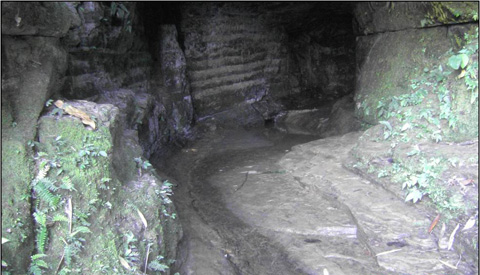

বৈচিত্র্যময় খাগড়াছড়ি
গা ছমছম করা অনুভূতি নিয়ে পাহাড়ী সুড়ঙ্গ পথ বেয়ে অন্ধকার পাতালে নেমে যাওয়া কল্পনার বিষয় হলেও আলুটিলার সুড়ঙ্গ পথ কল্পনার কিছু নয়। আলুটিলা কেন্দ্রের প্রধান আকর্ষণ হচ্ছে এর ‘রহস্যময় সুড়ঙ্গ’। স্থানীয় লোকের ভাষায় “মাতাই হাকর” যার বাংলা অর্থ দেবগুহা।
এ পাহাড়ের চূড়া থেকে ২৬৬টি সিঁড়ির নীচে আলুটিলা পাহাড়ের পাদদেশে পাথর আর শিলা মাটির ভাঁজে গড়া এ রহস্যময় সুড়ঙ্গের অবস্থান। গুহামুখের ব্যাস প্রায় ১৮ফুট আর দৈর্ঘ্য প্রায় ২৮০ফুট। প্রবেশমুখ ও শেষের অংশ আলো-আঁধারিতে আচ্ছন্ন। মাঝখানে নিকষ কালো গাঢ় অন্ধকার এ গুহার তলদেশ দিয়ে প্রবাহমান শীতল জলের ঝর্ণাধারা। গা ছমছম করা অনুভূতি।

আলুটিলার রহস্যময় সুড়ঙ্গ
নিয়ে এ গুহায় প্রবেশ করাটা একদিকে যেমন ভয়সংকুল তেমনি রোমাঞ্চকরও বটে। শুধু বাংলাদেশেতো বটেই পৃথিরীর অন্য কোন দেশেও এ রকম প্রাকৃতিক সুড়ঙ্গ পথের খুব একটা নজীর নেই। অনন্য সাধারণ এ গুহায় মশাল বা উজ্জ্বল টর্চের আলো ব্যতীত প্রবেশ করা যায় না। মশাল পর্যটন কেন্দ্রেই পাওয়া যায় ১০টাকার বিনিময়ে। গুহার একদিকে ঢুকে অন্যদিকে গিয়ে বেরোতে সময় লাগে মাত্র ১৫/২০মিনিট।
উপমহাদেশের একমাত্র প্রাকৃতিক এ সুড়ঙ্গ জেলার প্রধান পর্যটন আকর্ষণ।